Ectima é uma infecção bacteriana da pele que afeta as camadas mais profundas da derme, podendo atingir a gordura subcutânea e deixar cicatrizes permanentes, sendo uma infecção com maior tendência à cronicidade. É considerada uma forma ulcerativa do impetigo não-bolhoso, sendo causada principalmente pelas bactérias Streptococcus pyogenes e Staphylococcus aureus, embora uma variante mais grave, o ectima gangrenoso, seja causada por Pseudomonas aeruginosa.
Etiologia e fatores de risco
O ectima ocorre quando bactérias entram na pele através de feridas, cortes, picadas de insetos ou condições como escabiose. Fatores que aumentam o risco incluem:
• Higiene precária;
• Diabetes descontrolado;
• Alcoolismo;
• Desnutrição;
• Imunodeficiências (como HIV/AIDS);
• Ambientes quentes e úmidos.
Manifestações clínicas
O quadro se inicia por pequena bolha ou pústula, evoluindo para múltiplas úlceras de até 3 cm de diâmetro recobertas por crostas espessas e aderentes. São lesões dolorosas que podem estar associadas com linfadenopatia. Pode ocorre linfangite e celulite secundárias. Localiza-se nas pernas, coxas e nádegas, geralmente em número menor que 10 lesões. Involui deixando cicatriz. Os sintomas incluem:
• Bolhas ou pústulas que evoluem para úlceras profundas;
• Crostas grossas e aderentes de coloração cinza-amarelada;
• Dor, vermelhidão e inchaço ao redor das lesões;
• Cicatrização lenta, podendo deixar marcas permanentes.
No caso do ectima gangrenoso, as lesões podem evoluir para úlceras necróticas com escaras escuras, podendo levar a infecções sistêmicas graves.
Diagnóstico
É clínico, baseado na aparência das lesões. Em alguns casos, pode ser necessária uma biópsia ou cultura bacteriana para identificar o agente causador.
Diagnóstico diferencial
Deve ser feito com infecções não usuais que lembrem muito o ectima como o carbúnculo, causado pelo Bacillus anthracis, a difteria cutânea, causada pelo Corynebacterium diphtheriae e o ectima gangrenoso, causada pela Pseudomona aeruginosa. Não esquecer as úlceras devido a vasculites e outras vasculopatias.
Tratamento
Envolve:
1. Antibióticos: Tópicos (como mupirocina) ou orais (penicilina, cefalexina) para combater a infecção.
2. Cuidados locais: Limpeza das lesões com água morna e sabão, remoção de crostas e aplicação de curativos estéreis.
3. Casos graves: Antibióticos intravenosos ou cirurgia para remover tecido necrótico no ectima gangrenoso.
Prevenção
• Manter boa higiene;
• Evitar compartilhar itens pessoais;
• Tratar feridas cutâneas prontamente;
• Controlar condições como diabetes e imunodeficiências.
Complicações
Se não tratado, o ectima pode evoluir para complicações como celulite, sepse ou glomerulonefrite pós-estreptocócica (esta, aproximadamente 1%).
REFERÊNCIAS BIBLIOGRÁFICAS
1. Ecthyma Gangrenosum. Korte AKM, Vos JM.N Engl J Med. 2017 Dec 7;377(23):e32.
2. [Ecthyma]. Babiano Fernández MA.Semergen. 2015 Nov-Dec;41(8):e84-5.
3. Ecthyma Gangrenosum. Shah M, Crane JS.2023 Jun 28. In: StatPearls [Internet]. Treasure Island (FL): StatPearls Publishing; 2025 Jan–.PMID: 30521198
4. Ecthyma amidst the global monkeypox outbreak: A key differential? -A case series. Nukaly HY, Alhawsawi WK, Nassar JY, Alharbi A, Tayeb S, Rabie N, Alqurashi M, Faraj R, Fadag R, Samannodi M.IDCases. 2024 Dec 15;39:e02125.
5. Periocular ecthyma gangrenosum with Pseudomonas septicemia in an infant: A case report. Surukrattanaskul S, Pittayapongpat R, Wangtiraumnuay N.IDCases. 2023 Sep 7;34:e01894.
Atlas de imagens 15

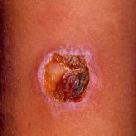

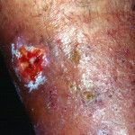

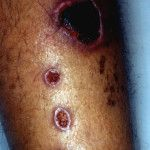

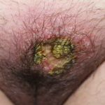

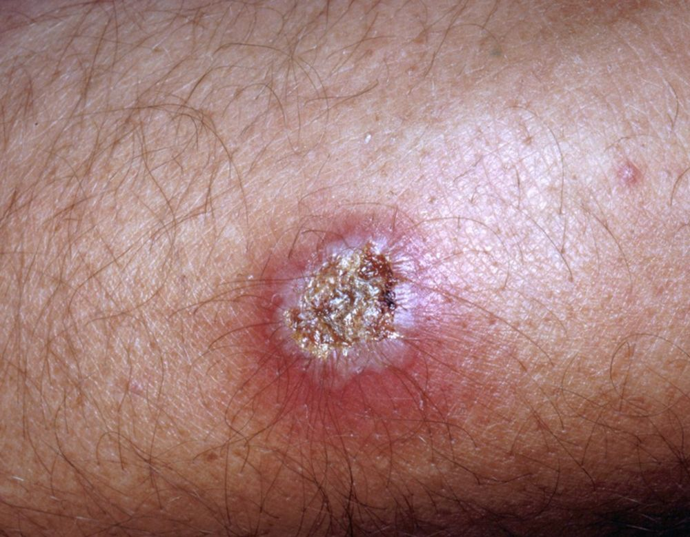

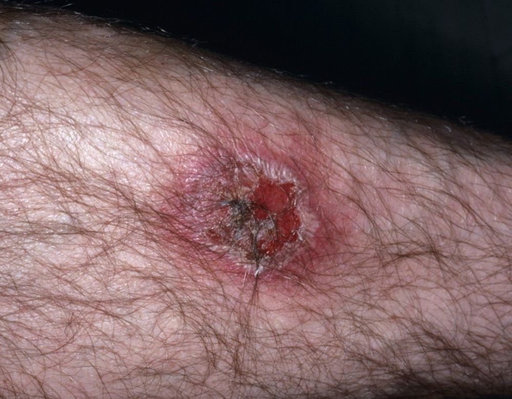

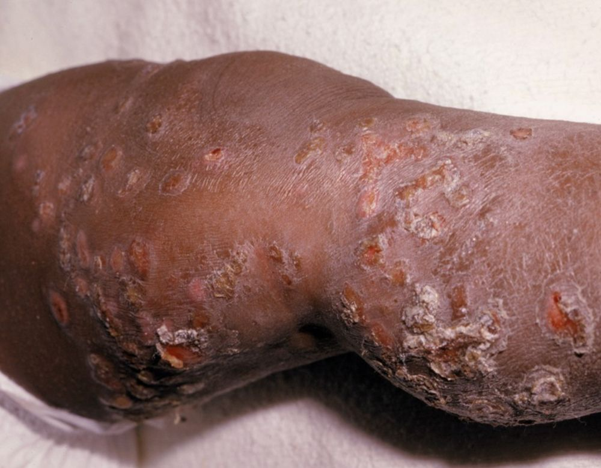

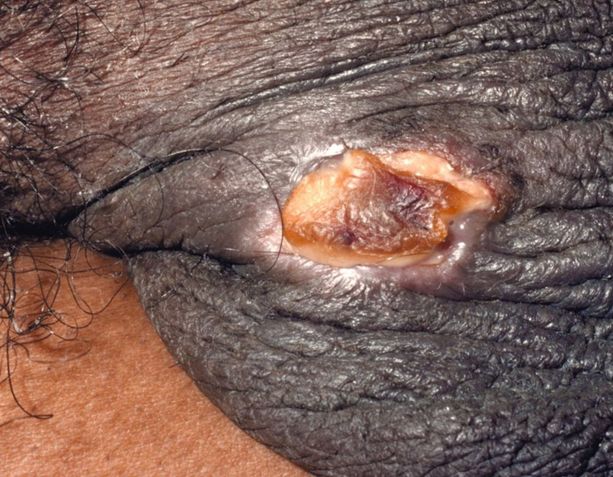

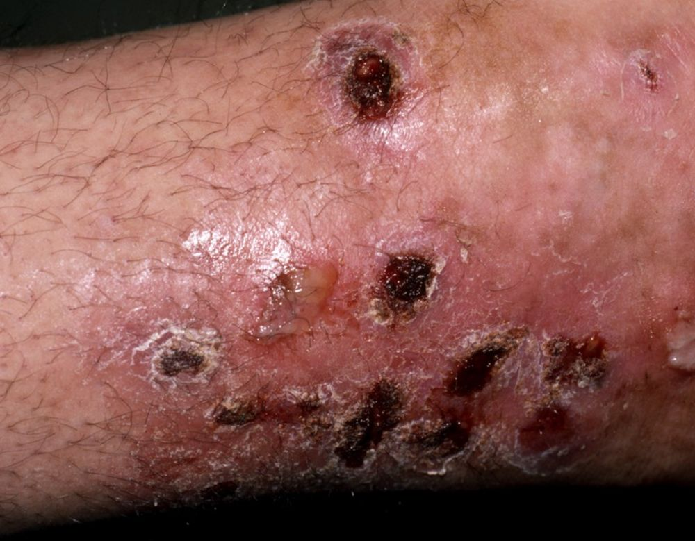

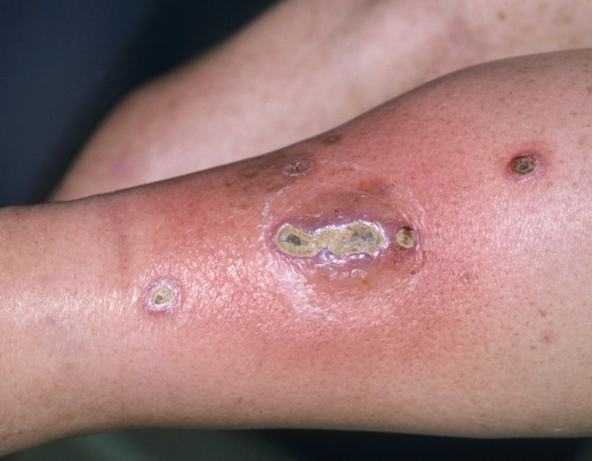

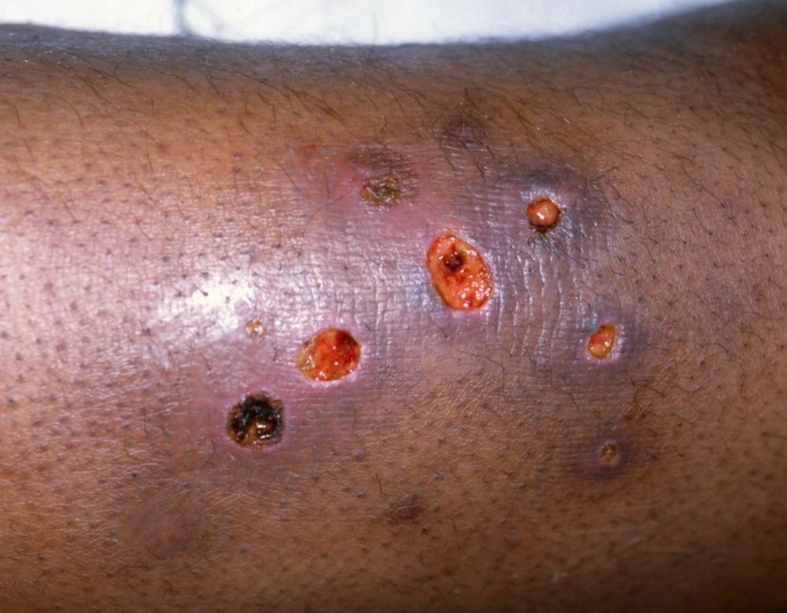

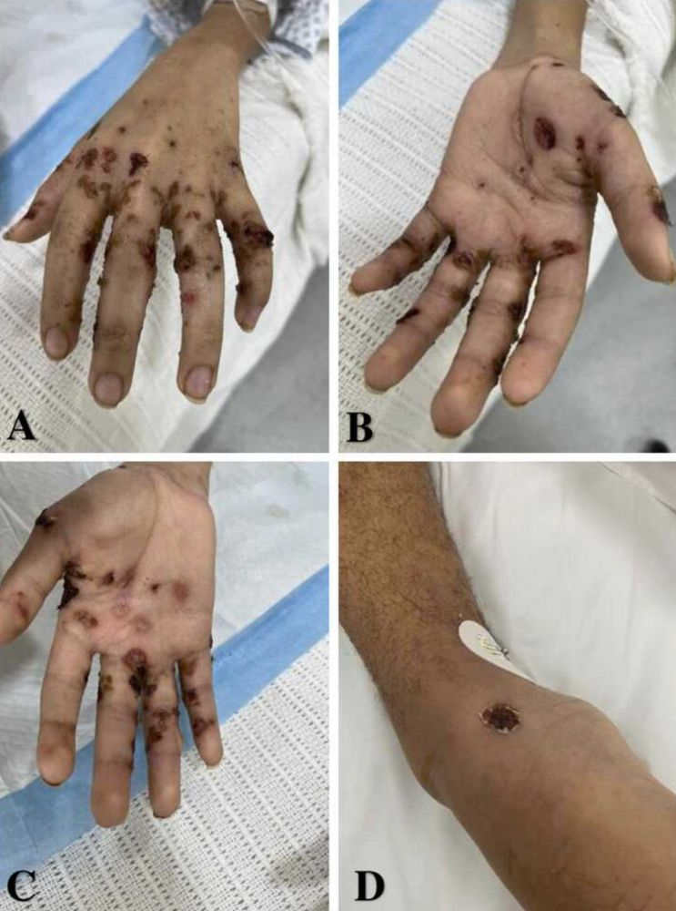

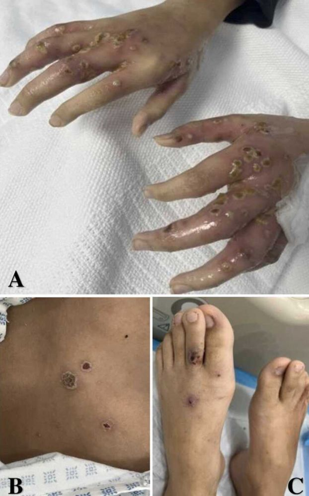

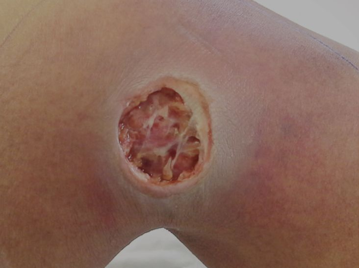

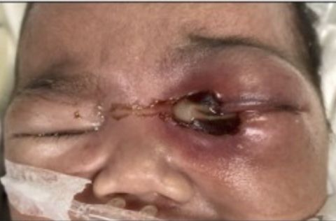
Na Skin Prime
Como podemos ajudar
Entre os recursos citados para Ectima, estes estão disponíveis na clínica:
Tratamentos
Diagnóstico